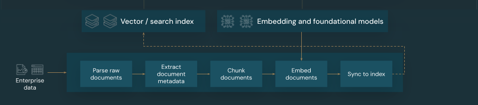

3.1. Data pipeline#
The foundation of any RAG application with unstructured data is the data pipeline. This pipeline is responsible for preparing the unstructured data in a format that can be effectively utilized by the RAG application. While this data pipeline can become arbitrarily complex, the following are the key components you need to think about when first building your RAG application:
Corpus composition: Selecting the right data sources and content based on the specific use case
Parsing: Extracting relevant information from the raw data using appropriate parsing techniques
Chunking: Breaking down the parsed data into smaller, manageable chunks for efficient retrieval
Embedding: Converting the chunked text data into a numerical vector representation that captures its semantic meaning
We discuss how to experiment with all of these data pipeline choices from a practical standpoint in implementing data pipeline changes.
3.1.1. Corpus composition#
To state the obvious, without the right data corpus, your RAG application won’t be able to retrieve the information required to answer a user query. The right data will be entirely dependent on the specific requirements and goals of your application, making it crucial to dedicate time to understand the nuances of data available (see the requirements gathering section for guidance on this).
For example, when building a customer support bot, you might consider including:
Knowledge base documents
Frequently asked questions (FAQs)
Product manuals and specifications
Troubleshooting guides
Engage domain experts and stakeholders from the outset of any project to help identify and curate relevant content that could improve the quality and coverage of your data corpus. They can provide insights into the types of queries that users are likely to submit, and help prioritize the most important information to include.
3.1.2. Parsing#
Having identified the data sources for your RAG application, the next step will be extracting the required information from the raw data. This process, known as parsing, involves transforming the unstructured data into a format that can be effectively utilized by the RAG application.
The specific parsing techniques and tools you use will depend on the type of data you are working with. For example:
Text documents (e.g., PDFs, Word docs): Off-the-shelf libraries like unstructured and PyPDF2 can handle various file formats and provide options for customizing the parsing process.
HTML documents: HTML parsing libraries like BeautifulSoup can be used to extract relevant content from web pages. With these you can navigate the HTML structure, select specific elements, and extract the desired text or attributes.
Images and scanned documents: Optical Character Recognition (OCR) techniques will typically be required to extract text from images. Popular OCR libraries include Tesseract, Amazon Textract, Azure AI Vision OCR, and Google Cloud Vision API.
When parsing your data, consider the following best practices:
Data cleaning: Preprocess the extracted text to remove any irrelevant or noisy information, such as headers, footers, or special characters. Be cognizant of reducing the amount of unnecessary or malformed information that your RAG chain will need to process.
Handling errors and exceptions: Implement error handling and logging mechanisms to identify and resolve any issues encountered during the parsing process. This will help you quickly identify and fix problems. Doing so often points to upstream issues with the quality of the source data.
Customizing parsing logic: Depending on the structure and format of your data, you may need to customize the parsing logic to extract the most relevant information. While it may require additional effort upfront, invest the time to do this if required - it often prevents a lot of downstream quality issues.
Evaluating parsing quality: Regularly assess the quality of the parsed data by manually reviewing a sample of the output. This can help you identify any issues or areas for improvement in the parsing process.
3.1.3. Chunking#

After parsing the raw data into a more structured format, the next step is to break it down into smaller, manageable units called chunks. Segmenting large documents into smaller, semantically concentrated chunks, ensures that retrieved data fits in the LLM’s context, while minimizing the inclusion of distracting or irrelevant information. The choices made on chunking will directly affect what retrieved data the LLM is provided, making it one of the first layers of optimization in a RAG application.
When chunking your data, you will generally need to consider the following factors:
Chunking strategy: The method you use to divide the original text into chunks. This can involve basic techniques such as splitting by sentences, paragraphs, or specific character/token counts, through to more advanced document-specific splitting strategies.
Chunk size: Smaller chunks may focus on specific details but lose some surrounding information. Larger chunks may capture more context but can also include irrelevant information.
Overlap between chunks: To ensure that important information is not lost when splitting the data into chunks, consider including some overlap between adjacent chunks. Overlapping can ensure continuity and context preservation across chunks.
Semantic coherence: When possible, aim to create chunks that are semantically coherent, meaning they contain related information and can stand on their own as a meaningful unit of text. This can be achieved by considering the structure of the original data, such as paragraphs, sections, or topic boundaries.
Metadata: Including relevant metadata within each chunk, such as the source document name, section heading, or product names can improve the retrieval process. This additional information in the chunk can help match retrieval queries to chunks.
Finding the right chunking method is both iterative and context-dependent. There is no one-size-fits all approach; the optimal chunk size and method will depend on the specific use case and the nature of the data being processed. Broadly speaking, chunking strategies can be viewed as the following:
Fixed-size chunking: Split the text into chunks of a predetermined size, such as a fixed number of characters or tokens (e.g., LangChain CharacterTextSplitter). While splitting by an arbitrary number of characters/tokens is quick and easy to set up, it will typically not result in consistent semantically coherent chunks.
Paragraph-based chunking: Use the natural paragraph boundaries in the text to define chunks. This method can help preserve the semantic coherence of the chunks, as paragraphs often contain related information (e.g, LangChain RecursiveCharacterTextSplitter).
Format-specific chunking: Formats such as markdown or HTML have an inherent structure within them which can be used to define chunk boundaries (for example, markdown headers). Tools like LangChain’s MarkdownHeaderTextSplitter or HTML header/section-based splitters can be used for this purpose.
Semantic chunking: Techniques such as topic modeling can be applied to identify semantically coherent sections within the text. These approaches analyze the content or structure of each document to determine the most appropriate chunk boundaries based on shifts in topic. Although more involved than more basic approaches, semantic chunking can help create chunks that are more aligned with the natural semantic divisions in the text (see LangChain SemanticChunker for an example of this).
Example: Fixed-size chunking example using LangChain’s RecursiveCharacterTextSplitter with chunk_size=100 and chunk_overlap=20. ChunkViz provides an interactive way to visualize how different chunk size and chunk overlap values with Langchain’s character splitters affects resulting chunks.
3.1.4. Embedding model#

After chunking your data, the next step is to convert the text chunks into a vector representation using an embedding model. An embedding model is used to convert each text chunk into a vector representation that captures its semantic meaning. By representing chunks as dense vectors, embeddings allow for fast and accurate retrieval of the most relevant chunks based on their semantic similarity to a retrieval query. At query time, the retrieval query will be transformed using the same embedding model that was used to embed chunks in the data pipeline.
When selecting an embedding model, consider the following factors:
Model choice: Each embedding model has its nuances, and the available benchmarks may not capture the specific characteristics of your data. Experiment with different off-the-shelf embedding models, even those that may be lower-ranked on standard leaderboards like MTEB. Some examples to consider include:
Max tokens: Be aware of the maximum token limit for your chosen embedding model. If you pass chunks that exceed this limit, they will be truncated, potentially losing important information. For example, bge-large-en-v1.5 has a maximum token limit of 512.
Model size: Larger embedding models generally offer better performance but require more computational resources. Strike a balance between performance and efficiency based on your specific use case and available resources.
Fine-tuning: If your RAG application deals with domain-specific language (e.g., internal company acronyms or terminology), consider fine-tuning the embedding model on domain-specific data. This can help the model better capture the nuances and terminology of your particular domain, and can often lead to improved retrieval performance.